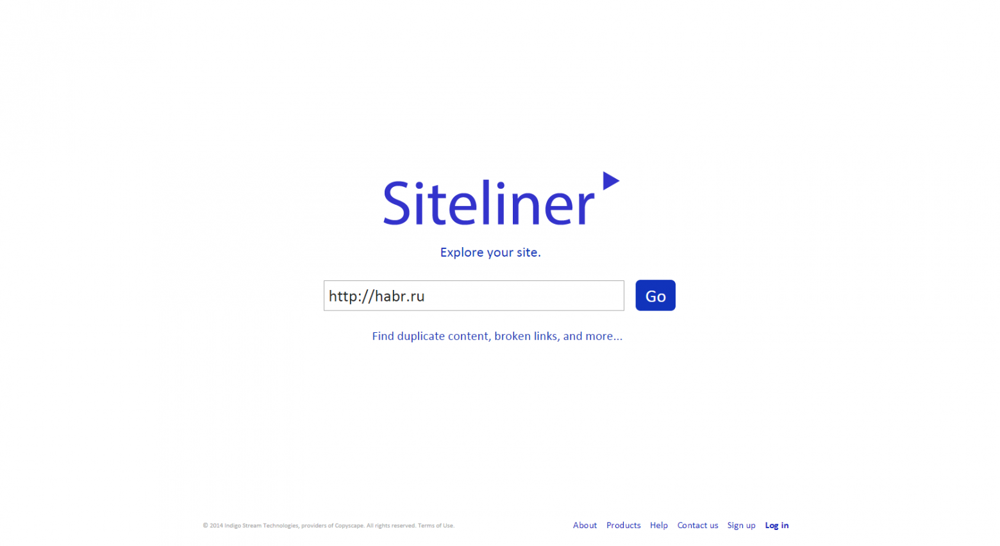
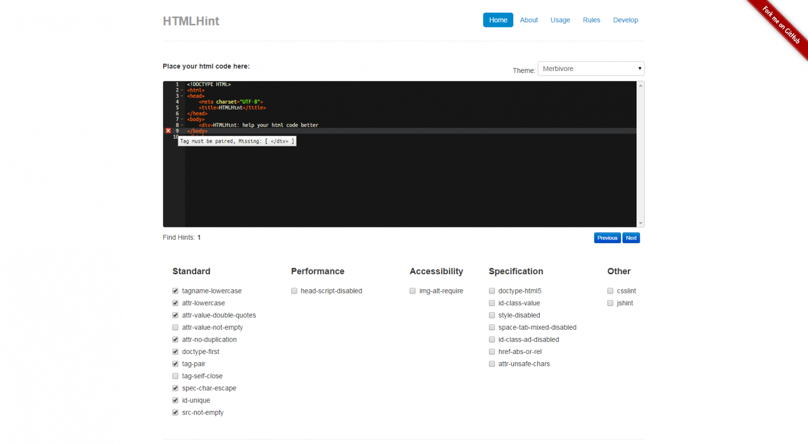
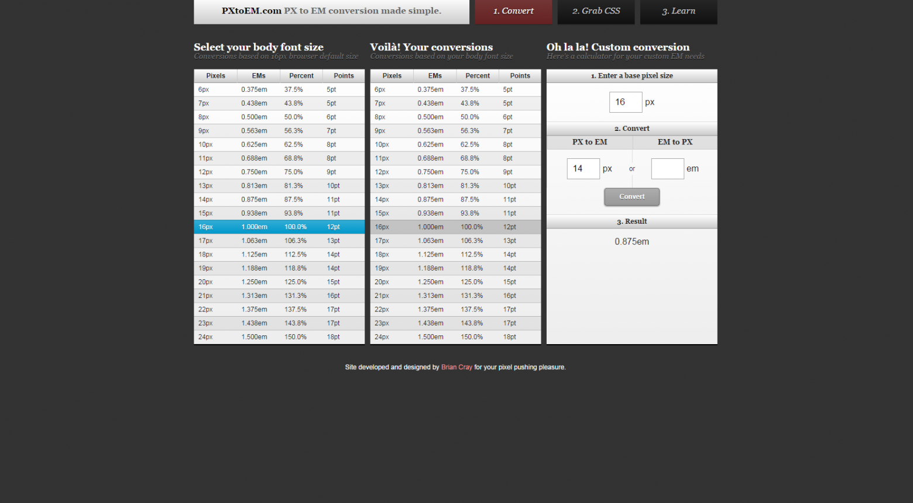

30 полезных сервисов для веб-разработчиков и дизайнеров v2
Предыстория: я веду свой паблик ВК о веб-разработке, в связи с чем я каждый день имею дело с большим количеством материалов о веб-разработке. Однажды (3 месяца назад) мне пришла в голову идея опубликовать на хабре подборку «30 полезных сервисов для веб-разработчика». Тот пост набрал почти 100 000 просмотров, и мне приятно, что он оказался полезен сообществу. С тех пор у меня поднакопилось больше 30 новых сервисов, которые будут полезны как разработчикам, так и дизайнерам. Лучшие из них я собрал в этом посте. Осторожно, под катом много картинок!
1. Learn Angular — бесплатные интерактивные уроки по AngularJS.

2. Siteliner — инструмент для seo-анализа сайта. Поиск дублирующегося контента, неработающих ссылок и многое другое.
3. HTML Template Generator — больше подойдет для ленивых разработчиков, еще не использующих никакого boilerplate. Сервис позволяет сгенерировать базовую HTML-разметку документа: добавить нужные мета-теги, скрипты, либо целые бандлы, например, Twitter Bootstrap.
4. Shortcut Mapper — позволяет освежить в памяти горячие сочетания клавиш для программ Adobe Photoshop / Adobe Lightroom, Autodesk 3dsMax / Autodesk Maya, Blender и, с недавних пор, Sublime Text 2.
5. Bounce.JS — одновременно и сервис, и JS-библиотека для быстрого создания и редактирования CSS3-анимаций.
6. CSS Shrink — онлайн-сжатие вашего CSS-кода. Кстати, не только сжатие — можно вставить уродливо отформатированный код и получить на выходе красивый.
7. JS Nice — деобфускация и базовое документирование JS-скрипта. Вставляете непонятный код, сервис его анализирует и приводит в нормальный вид — добавляет отступы, пытается назвать переменные осмысленно в зависимости от контекста, добавляет комментарии с указанием переменных и их типов и т.д.
8. Web Designers Checklist — чек-лист по подготовке проекта к сдаче для веб-дизайнера. Затрагивает многие аспекты, такие как именование файлов и слоев в макете, подготовка типографики, структура файлов и так далее.

9. HTML Hint — похож на JS Hint. Проверяет разметку на соответствие заданным параметрам.
10. Lollytin — визуальный конструктор лэйаута страницы. Использует Bootstrap 3.
11. CSS Colours — красиво оформленный список CSS-цветов, которые могут быть использованы в виде слова, например color: blue.
12. Social Good Ipsum — сервис для генерации текста-рыбы.
13. Badge Service — генерация svg-значков в стиле github.
14. CSS Triggers — подробная информация обо всех CSS-свойствах: что они делают, как влияют на рендеринг страницы и тому подобное.
15. Blockspring — создание своих API, не требующих хранения данных в БД, а также коллекция уже созданных другими юзерами API.
16. Qwecode — кодирование / декодирование строк в различные форматы: BASE64, Binary, Unicode numbers и другие.
17. Loremflickr — это как placehold.it, но с котиками :)
18. CSS Shortand generator — собирает специфические свойства типа background-color в одно общее свойство.

19. PX to EM — удобный конвертер из PX в EM и обратно.
20. Frame — набор готовых мокапов для демонстрации дизайна / верстки / etc. Выбираете мокап, загружаете изображение, получаете на выходе готовую картинку с вашей работой.
21. CodeFights — задачки на знание языка JavaScript.
22. Cheetyr — шпаргалки по Photoshop, Illustrator, CSS, Git и Vim.
23. SnazzyMaps — различные цветовые схемы для Google Maps.
24. Plain Pattern — создание паттернов из SVG-изображений.
25. Sass to Scss — конвертер из Sass в Scss.
26. Gitter — удобный чат, имеющий хорошую интеграцию с github'ом.
27. Fibonacci — визуальный конструктор flexbox-лэйаута.

28. Project Parfait — инструмент для быстрой нарезки .psd-макета, и вообще для ускорения верстки в целом. Позволяет узнавать расстояние между слоями, размер разных слоев и многое другое.
29. The Code Player — онлайн-уроки по HTML / CSS / JS в формате живого кодинга. Можно записывать свои уроки.
30. Типограф Муравьева — доступен также и в качестве PHP / Python библиотеки. Позволяет правильно оформить текст.
Теги:
Хабы: